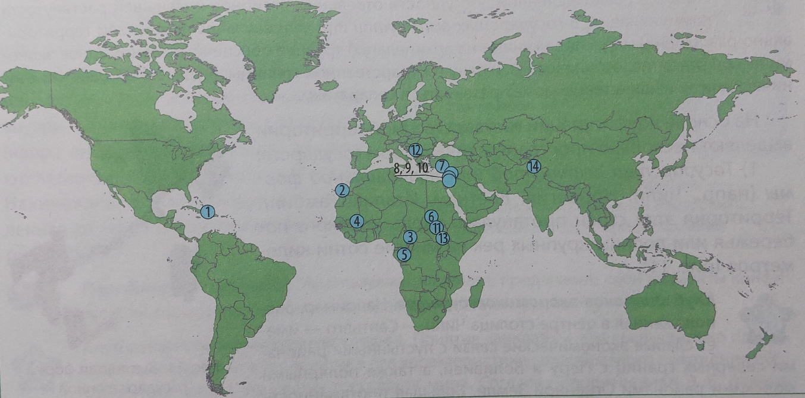
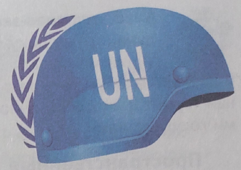
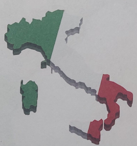
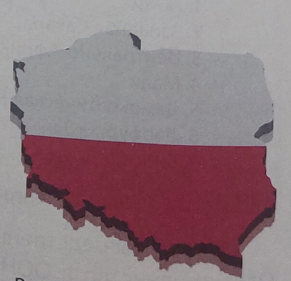
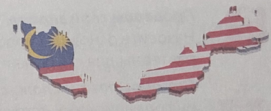
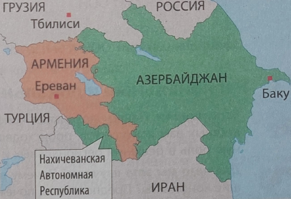

Вспоминаем
Что такое политическая карта мира? В чём заключается динамичность политической карты мира? Какие этапы формирования прошла современная политическая карта мира? Какие государства имеют самую большую площадь?
Что такое политическая карта мира? В чём заключается динамичность политической карты мира? Какие этапы формирования прошла современная политическая карта мира? Какие государства имеют самую большую площадь?
Почему современному учащемуся необходимо знать особенности формирования политической карты мира? Предположите, для каких специальностей в будущем эта тема станет наиболее актуальной. В каких учреждениях образования и на каких специальностях возможно получить образование, связанное с глубокими знаниями процессов, происходящих на политической карте мира?
Объекты политической карты мира. Политическая карта мира динамична из-за изменения границ, площадей государств, образования и распада государств, изменения форм правления и др. Основными объектами политической карты мира являются государства и территории (рис. 8).
Среди государств выделяют самоуправляющиеся (независимые, суверенные) и самопровозглашённые (непризнанные).
Какими особенностями можно охарактеризовать суверенное государство?
В XXI в. преобладают суверенные государства. В настоящее время в ООН входят 193 государства-члена и 2 государства с особым статусом наблюдателя (Ватикан и Палестина). Количество суверенных государств постоянно увеличивается: в 1900 г. их было 55, перед Второй мировой войной — 71, в 1947 г. — 81, к 2000 г. — более 190.
Приведите примеры из художественной литературы, отражающие события на политической карте мира («Повесть временных лет», «Слово о полку Игореве»).
Определите, к каким событиям на политической карте мира относятся строки Янки Купалы:
Ты з Заходняй, я з Усходняй
Нашай Беларусі,
Больш з табою ўжо ніколі
Я не разлучуся...
На политической карте мира существуют несамоуправляющиеся (зависимые) территории — части земной поверхности с определёнными границами, которые управляются другим государством. Они не обладают политической независимостью, но могут иметь определённую автономию. Количество зависимых территорий постоянно сокращается, в настоящее время их около 30, из них 17 официально включены в список ООН.
Найдите на карте зависимые территории. Какая из зависимых территорий находится ближе всего к Республике Беларусь?
Примерами зависимых территорий являются: Новая Каледония и Французская Полинезия (принадлежат Франции) в Азиатско-Тихоокеанском регионе; Гуам (США); Питкэрн (Великобритания). Другие — заморские территории, департаменты, ассоциированные государства (см. рис. 8). Крупнейшей зависимой территорией по численности населения является Пуэрто-Рико, по площади — Гренландия.
Примерами зависимых стран или колоний являются: Гибралтар, Бермуды и Фолклендские острова, остров Святой Елены (Великобритания); Гайана, Мартиника, Реюньон (Франция); Восточное Самоа (США); Аруба и Кюрасао (Нидерланды) и др.
В связи с конфликтами на современной политической карте, связанными со стремлением к отделению и обретению суверенитета, возникают самопровозглашённые государства. Они обладают всеми признаками государственности (население, территория, власть, суверенитет), но не имеют полного или частичного международного признания. Среди самопровозглашённых государств выделяют непризнанные и частично признанные государства.
Используя карты атласа, назовите самопровозглашённые государства на территориях стран — соседей Республики Беларусь, а также государств — членов СНГ.
На политической карте мира насчитывается около 120 непризнанных государств, из них около 40 в Азии и 30 в Европе. Непризнанными называются государства, которые не признаны ни одним государством — членом ООН. Примерами являются: Приднестровская Молдавская Республика, Нагорно-Карабахская Республика, Донецкая Народная Республика, Исламское государство, Западный Курдистан.
Государства, которые не могут вступить в ООН, но признаны некоторыми государствами — членами ООН, называются частично признанными. Примерами являются: Турецкая Республика Северного Кипра, Республика Косово, Республика Абхазия и Республика Южная Осетия, Государство Палестина.
Большое количество непризнанных государств различного статуса на политической карте привело к появлению их обобщённого названия.
Квазигосударство — это политико-территориальное образование, которое, обладая основными признаками государства, лишено международного признания, вследствие чего не обладает суверенитетом.
С момента создания в 1945 г. Организация Объединённых Наций (ООН) способствует укреплению мира и восстановлению мира в случае вооружённых конфликтов. Миротворческие операции ООН являются одним из наиболее эффективных инструментов обеспечения мира и безопасности.
С какого года Республика Беларусь является членом ООН?
Миротворческая деятельность ООН находит широкое применение в ситуациях, связанных с внутригосударственными конфликтами и гражданскими войнами. С момента основания ООН осуществила 71 операцию по поддержанию мира (рис. 9).

В конце 1990-х гг. миротворческие операции были проведены в ДР Конго, ЦАР, Сьерра-Леоне и Косово. В начале ХХІ в. миротворцы ООН выполняли свои задачи в Либерии, Кот-д'Ивуаре, Южном Судане, Гаити и Мали. В настоящий момент осуществляется 14 миротворческих операций (рис. 10).

ООН непосредственно не влияет на формирование политической карты мира. Однако членство в ООН в современной системе международных отношений стало важнейшим символом всеобщего признания государственности, своего рода «золотым стандартом» международной законности.
Основным международным документом, определяющим государственность, является Конвенция Монтевидео 1933 г., которая выделяет четыре основных признака государства: постоянное население, определённая территория, правительство, способность вступать в отношения с другими государствами.
Территория государства включает: 1) часть земной суши; 2) внутренние и территориальные воды; 3) воздушное пространство над сушей и водами. Конфигурация и форма территории страны являются важными параметрами.
Компактная форма государственного устройства способствует равной доступности регионов и более коротким линиям связи. Государства с вытянутыми, неправильными или фрагментированными (архипелажными) территориями сталкиваются с трудностями в обеспечении равномерного экономического развития, охране границ и предотвращении сепаратизма в отдалённых районах с этническими меньшинствами.
На основе конфигурации государственной территории выделяют несколько пространственных форм государств:
Примерами являются Чили, Норвегия, Вьетнам, Италия, Гамбия. Их территории вытянуты вдоль побережий или крупных речных долин на сотни километров.

Столица Чили Сантьяго имеет слабые экономические связи с пустынными районами на севере (Перу и Боливия) и полярными морскими районами Огненной Земли. Вытянутость Италии с севера на юг способствует экономическим различиям между регионами.
Имеют форму, близкую к квадрату или кругу. Примерами являются Франция, Испания, Польша, Венгрия и др. В таких формах все пограничные районы примерно равноудалены от центра страны.

Даже при относительно благоприятной внешней форме территория страны может содержать крупные природные барьеры и труднодоступные районы, что может затруднять функционирование государства.
Перу разделено на две части высокими хребтами Анд, а пустынные районы Египта слабо заселены и частично изолированы от главной полосы расселения по долине и дельте Нила.
Состоящие из нескольких частей, разделённых территорией других стран или международными водами (напр., государства-архипелаги — Индонезия и Филиппины, «двойная» Малайзия (рис. 13), расположенная на полуострове Малакка и острове Калимантан).

Небольшие районы, отрезанные от основной территории государства землями других стран или расположенные внутри территории других государств (напр., анклавное положение занимают Калининградская область России, Нахичевань в Азербайджане, отделённая от него территорией Армении (рис. 14)).

Используя карты атласа, предложите свои варианты конфигурации государств на основе их пространственной формы.
Понятия «анклав» и «эксклав» широко применяются в географии и геополитике для характеристики своеобразного положения обособленных частей отдельных государств мира. Согласно определениям Э. Б. Алаева, понятие «анклав» используется, когда говорят о территории чужого государства. Та же территория, но по отношению к своему государству будет называться эксклавом. Поэтому разница понятий лежит только лишь в правовой плоскости. С точки зрения географии, это один и тот же участок.
Объектами политической карты мира являются государства и территории.
На политической карте насчитывается 193 независимых государства и около 30 зависимых территорий.
Количество зависимых территорий постоянно сокращается.
Основная роль ООН в формировании современной политической карты мира заключается в обеспечении коллективной безопасности стран-участниц, предотвращении развития политических конфликтов.